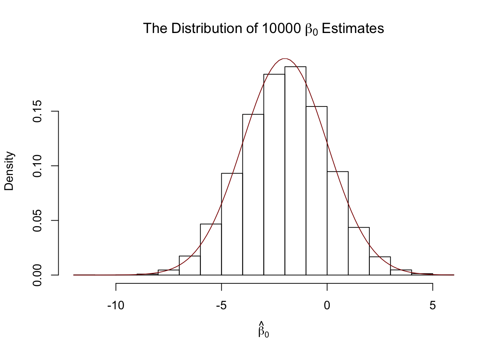
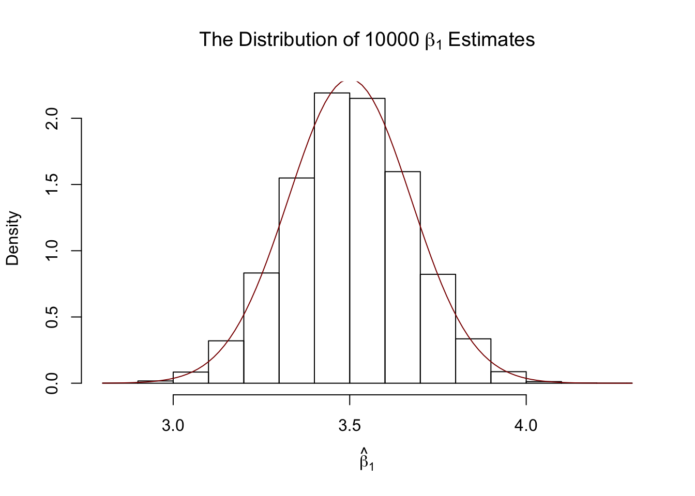
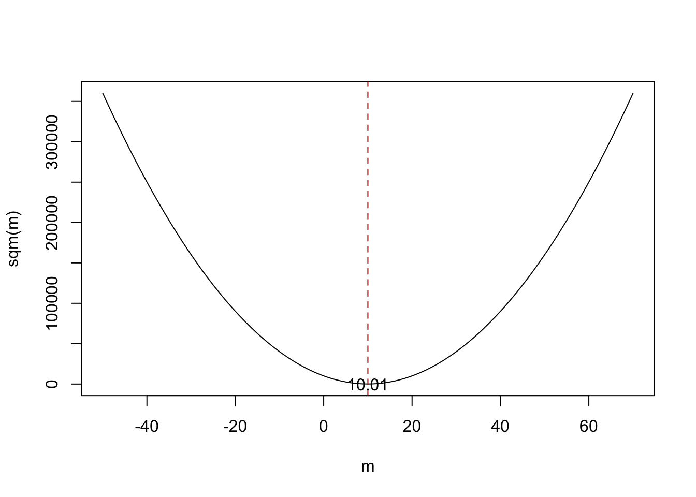
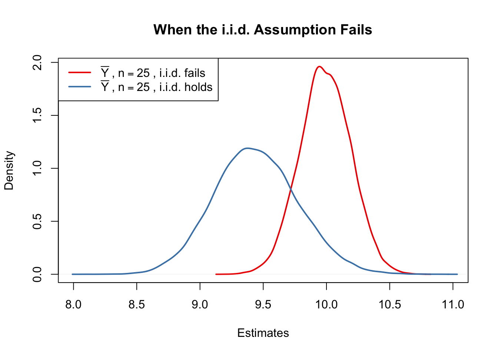
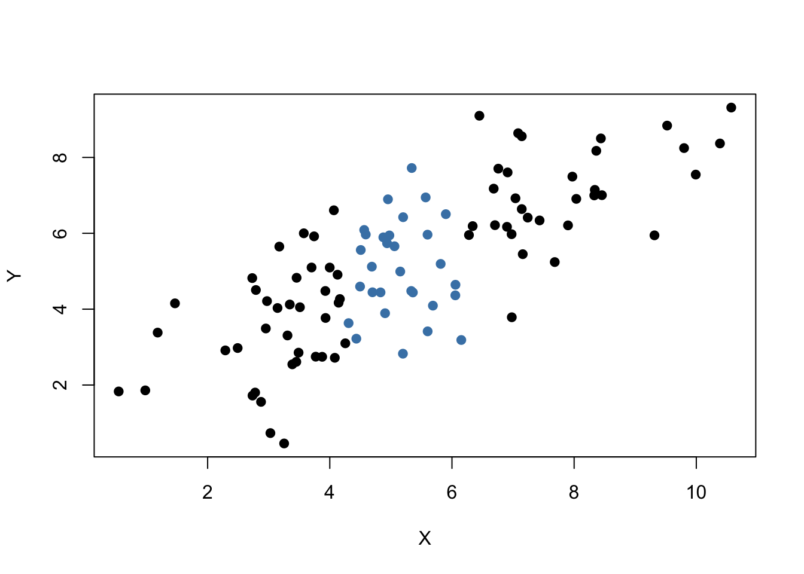

4.4 The Sampling Distribution of the OLS Estimator
Because the OLS estimators \(\hat{\beta_0}\) and \(\hat{\beta_1}\) are computed from a randomly drawn sample, the estimators themselves are random variables with a probability distribution — the so-called sampling distribution of the estimators — which describes the values they could take over different random samples. Although the sampling distribution of \(\hat{\beta_0}\) and \(\hat{\beta_1}\) can be complicated when the sample size is small and generally differs with the number of observation, \(n\), it is possible to make certain statements about it that hold for all \(n\). In particular \[ E(\hat{\beta_0}) = \beta_0 \ \ \text{and} \ \ E(\hat{\beta_1}) = \beta_1,\] that is, \(\hat\beta_0\) and \(\hat\beta_1\) are unbiased estimators of \(\beta_0\) and \(\beta_1\), the true parameters. If the sample is sufficiently large, by the central limit theorem the joint sampling distribution of the estimators is well approximated by the bivariate normal distribution (2.1). This implies that the marginal distributions are also normal in large samples. Core facts on the large-sample distribution of \(\beta_0\) and \(\beta_1\) are presented in Key Concept 4.4.
Key Concept 4.4
Large Sample Distribution of \(\hat\beta_0\) and \(\hat\beta_1\)
If the least squares assumptions in Key Concept 4.3 hold, then in large samples \(\hat\beta_0\) and \(\hat\beta_1\) have a jointly normal sampling distribution. The large sample normal distribution of \(\hat\beta_1\) is \(N(\beta_1, \sigma^2_{\hat\beta_1})\), where the variance of the distribution, \(\sigma^2_{\hat\beta_1}\), is
\[ \sigma^2_{\hat\beta_1} = \frac{1}{n} \frac{Var \left[ \left(X_i - \mu_X \right) u_i \right]} {\left[ Var \left(X_i \right) \right]^2} \tag{4.1}. \]
The large sample normal distribution of \(\hat\beta_0\) is \(N(\beta_0, \sigma^2_{\hat\beta_0})\), where
\[ \sigma^2_{\hat\beta_0} = \frac{1}{n} \frac{Var \left( H_i u_i \right)}{ \left[ E \left(H_i^2 \right) \right]^2 } \ , \ \text{where} \ \ H_i = 1 - \left[ \frac{\mu_X} {E \left( X_i^2\right)} \right] X_i. \tag{4.2} \]
R Simulation Study 1
Whether Key Koncept 4.4 really holds can be verified using R. First we build our own population of \(100000\) observations in total. To do this we need values for our independent variable \(X\), for the error term \(u\), and the regression parameters \(\beta_0\) and \(\beta_1\). With all this combined in a simple regression model, we can compute our dependent variable \(Y\).
In our example we generate the numbers \(X_i\), \(i = 1\), … ,\(100000\) by drawing a random sample from a uniform distribution on the interval \([0,20]\). The realisations of the error terms \(u_i\) are drawn from a standard normal distribution with parameters \(\mu = 0\) and \(\sigma^2 = 100\) (note that rnorm() requires \(\sigma\) as input for the argument sd, see ?rnorm). Furthermore we chose \(\beta_0 = -2\) and \(\beta_1 = 3.5\) so the true model is
\[ Y_i = -2 + 3.5 \cdot X_i. \]
Finally, we store the results in a data.frame.
# simulate data
N <- 100000
X <- runif(N, min = 0, max = 20)
u <- rnorm(N, sd = 10)
# population regression
Y <- -2 + 3.5 * X + u
population <- data.frame(X, Y)From now on we will consider the previously generated data as the true population (which of course would be unknown in a real world application, otherwise there would not be a reason to do draw a random sample in the first place). The knowledge about the true population and the true relationship between \(Y\) and \(X\) can be used to verify the statements made in Key Concept 4.4.
First, let us calculate the true variances \(\sigma^2_{\hat{\beta_0}}\) and \(\sigma^2_{\hat{\beta_1}}\) for a randomly drawn sample of size \(n = 100\).
# set sample size
n <- 100
# compute the variance of hat_beta_0
H_i <- 1 - mean(X) / mean(X^2) * X
var_b0 <- var(H_i * u) / (n * mean(H_i^2)^2 )
# compute the variance of hat_beta_1
var_b1 <- var( ( X - mean(X) ) * u ) / (100 * var(X)^2)# print variances to the console
var_b0## [1] 4.045066var_b1## [1] 0.03018694Now let us assume that we do not know the true values of \(\beta_0\) and \(\beta_1\) and that it is not possible to observe the whole population. However, we can observe a random sample of \(n\) observations. Then, it would not be possible to compute the true parameters but we could obtain estimates of \(\beta_0\) and \(\beta_1\) from the sample data using OLS. However, we know that these estimates are outcomes of random variables themselves since the observations are randomly sampled from the population. Key Concept 4.4. describes their distributions for large \(n\). When drawing a single sample of size \(n\) it is not possible to make any statement about these distributions. Things change if we repeat the sampling scheme many times and compute the estimates for each sample: using such a procedure we simulate outcomes of the respective distributions.
To achieve this in R, we employ the following approach:
- We assign the number of repetitions, say \(10000\), to
reps. Then we initialize a matrixfitwere the estimates obtained in each sampling iteration shall be stored row-wise. Thusfithas to be an array of dimensionsreps\(\times2\). - In the next step we draw
repsrandom sample of sizenfrom the population and obtain the OLS estimates for each sample. The results are stored as row entries in the outcome matrixfit. This is done using afor()loop. - At last, we estimate variances of both coefficient estimators using the sampled outcomes and plot histograms of the latter. We also add plot of the density functions belonging to the distributions that follow from Key Concept 4.4. The function
bquote()is used to obtain math expressions in the titels and labels of both plots. See?bquote.
# set repetitions and sample size
n <- 100
reps <- 10000
# initialize the matrix of outcomes
fit <- matrix(ncol = 2, nrow = reps)
# loop sampling and estimating of the coefficients
for (i in 1:reps){
sample <- population[sample(1:N, n),]
fit[i, ] <- lm(Y ~ X, data = sample)$coefficients
}
# compute variance estimates using outcomes
var(fit[ ,1])## [1] 4.057089var(fit[ ,2])## [1] 0.03021784# plot histograms of beta_0 estimates
hist(fit[ ,1],
main = bquote(The ~ Distribution ~ of ~ 10000 ~ beta[0] ~ Estimates),
xlab = bquote(hat(beta)[0]),
freq = F)
# add true distribution to plot
curve(dnorm(x,-2,sqrt(var_b0)), add = T, col="darkred")
# plot histograms of beta_1 estimates
hist(fit[ ,2],
main = bquote(The ~ Distribution ~ of ~ 10000 ~ beta[1] ~ Estimates),
xlab = bquote(hat(beta)[1]),
freq = F)
# add true distribution to plot
curve(dnorm(x,3.5,sqrt(var_b1)), add = T, col="darkred")
We are now able to say the following: first, our variance estimates are in favour of the claims made in Key Concept 4.4 since they come close to the computed theoretical values. Second, the histograms suggest that the estimators distributions indeed follow normal distributions which can be fairly approximated by the respective normal distributions stated in Key Concept 4.4.
R Simulation Study 2
A further result implied by Key Concept 4.4 is that both estimators are consistent i.e. they converge in probability to their true value. This is since their variances converge to \(0\) as \(n\) increases. We can check this by repeating the simulation above for an increasing sequence of sample sizes. This means we no langer assign the sample size but a vector of sample sizes: n <- c(...).
Let us look at the distributions of \(\beta_1\). The idea here is to add an additional call of for() to the code. This is done in order to loop over the vector of sample sizes n. For each of the sample sizes we carry out the same simulation as before but plot a density estimate for the outcomes of each iteration over n. Notice that we have to change n to n[j] in the inner loop to ensure that the j\(^{th}\) element of n is used. In the simulation, we use sample sizes \(100, 250, 1000\) and \(3000\). Consequently we have a total of four distinct simulations using different sample sizes.
# set random seed for reproducibility
set.seed(1)
# set repetitions and the vector of sample sizes
reps <- 1000
n <- c(100, 250, 1000, 3000)
# initialize the matrix of outcomes
fit <- matrix(ncol = 2, nrow = reps)
# devide the plot panel in a 2-by-2 array
par(mfrow = c(2,2))
#### Loop sampling and plotting ####
# outer loop over n
for (j in 1:length(n)) {
# inner loop: sampling and estimating of the coefficients
for (i in 1:reps){
sample <- population[sample(1:N, n[j]), ]
fit[i, ] <- lm(Y ~ X, data = sample)$coefficients
}
# draw density estimates
plot(density(fit[,2]), xlim=c(2.5,4.5), col=j,
main = paste("n=", n[j]), xlab = bquote(hat(beta)[1]))
}
We find that, as \(n\) increases, the distribution of \(\hat\beta_1\) concentrates around its mean, i.e. its variance decreases. Put differently, the likelihood of observering estimates close to the true value of \(\beta_1 = 3.5\) grows as we increase the sample size. The same behaviour could be observed if we would analyze the distribution of \(\hat\beta_0\) instead.
R Simulation Study 3
Furthermore, (4.1) reveals that the variance of the OLS estimator for \(\beta_1\) decreases as the variance of the \(X_i\) increases. In other words, as we increase the amount of information provided by the regressor, that is increasing \(Var(X)\), which is used to estimate \(\beta_1\), we are more confident that the estimate is close to the true value (i.e. \(Var(\hat\beta_1)\) decreases).
We can visualize this by reproducing figure 4.6 from the book. To do this, we sample \(100\) observations \((X,Y)\) from a bivariate normal distribution with
\[E(X)=E(Y)=5,\] \[Var(X)=Var(Y)=5\] and \[Cov(X,Y)=4.\]
Formally, this is written down as
\[\begin{align} \begin{pmatrix} X \\ Y \\ \end{pmatrix} \overset{i.i.d.}{\sim} & \ \mathcal{N} \left[ \begin{pmatrix} 5 \\ 5 \\ \end{pmatrix}, \ \begin{pmatrix} 5 & 4 \\ 4 & 5 \\ \end{pmatrix} \right]. \tag{4.3} \end{align}\]To carry out the random sampling, we make use of the function mvtnorm() from the package MASS which allows to draw random samples from multivariate normal distributions, see ?mvtnorm. Next, we use the subset() function to split the sample into two subsets such that the first set, set1, consists of observations that fulfill the condition \(\lvert X - \overline{X} \rvert > 1\) and the second set, set2, includes the remainder of the sample. We then plot both sets and use different colors to make them distinguishable.
# load the MASS package
library(MASS)
# set random seed for reproducibility
set.seed(4)
# simulate bivarite normal data
bvndata <- mvrnorm(100,
mu = c(5,5),
Sigma = cbind(c(5,4),c(4,5))
)
# assign column names / convert to data.frame
colnames(bvndata) <- c("X","Y")
bvndata <- as.data.frame(bvndata)
# subset the data
set1 <- subset(bvndata, abs(mean(X) - X) > 1)
set2 <- subset(bvndata, abs(mean(X) - X) <= 1)
# plot both data sets
plot(set1, xlab = "X", ylab = "Y", pch = 19)
points(set2, col = "steelblue", pch = 19)
It is clear that observations that are close to the sample average of the \(X_i\) have less variance than those that are farther away. Now, if we were to draw a line as accurately as possible through either of the two sets it is obvious that choosing the observations indicated by the black dots, i.e. using the set of observations which has larger variance than the blue ones, would result in a more precise line. Now, let us use OLS to estimate and draw the regression lines for both sets of observations.
# estimate both regression lines
lm.set1 <- lm(Y ~ X, data = set1)
lm.set2 <- lm(Y ~ X, data = set2)
# add both lines to the plot
abline(lm.set1, col="green")
abline(lm.set2, col="red")
Evidently, the green regression line does far better in describing data sampled from the bivariate normal distribution stated in (4.3) than the red line. This is a nice example why we are interested in a high variance of the regressor \(X\): more variance in the \(X_i\) means more information from which the precision of the estimation benefits.